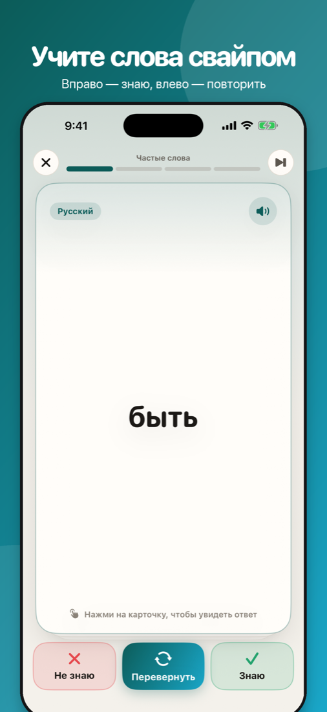
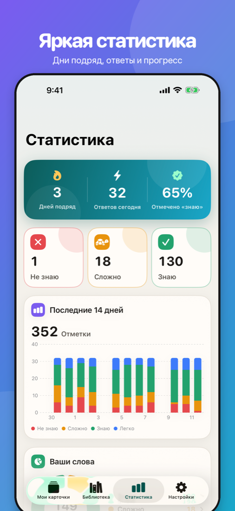
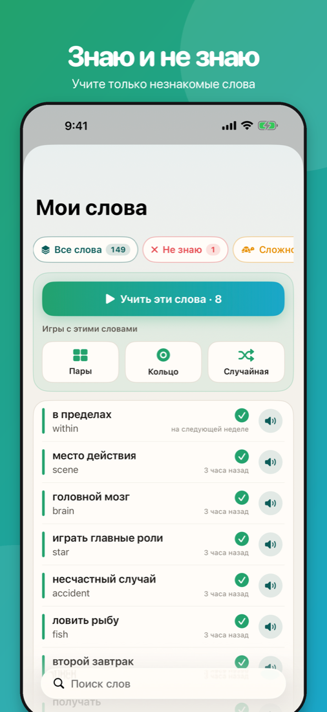
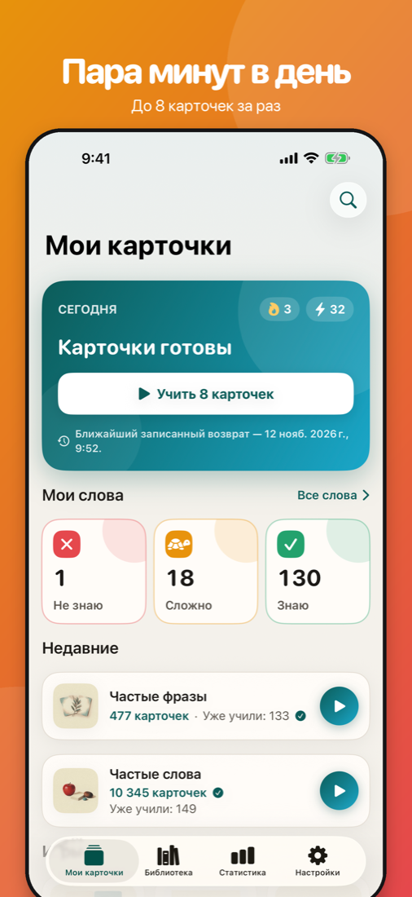
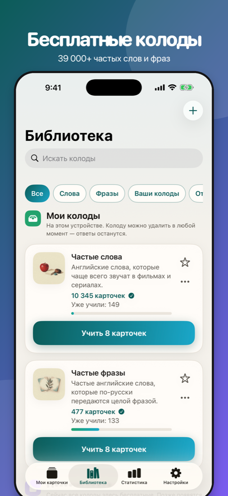

Учите слова свайпом.
Одна карточка на весь экран. Нажмите — перевернётся. Свайп вправо — знаю. Свайп влево — вернётся раньше. Cardavela превращает английские и русские слова в короткие яркие занятия.
Скачать в App Store
Почему Cardavela
Переворот и свайпы
Объёмный переворот показывает ответ с примером и озвучкой. «Знаю / Сложно / Не знаю» — три кнопки или один свайп.
Списки «знаю» и «не знаю»
Каждое слово попадает в «Не знаю», «Сложно» или «Знаю». Учите только незнакомые слова или играйте с ними в «Пары» и «Кольцо».
Яркая статистика
Дни подряд, ответы по дням, слова по спискам, повторения на неделю вперёд и календарь за 12 недель.
Бесплатные колоды
Частые английские слова и фразы из фильмов и сериалов с русскими значениями — больше 39 000 пар в обе стороны. Скоро — магазин новых колод.
Свои колоды
Наберите карточку, импортируйте Anki .apkg или простой список TXT/CSV: слово — перевод. Делитесь колодой одним файлом.
Интервальные повторения
Расписание FSRS возвращает карточку как раз перед тем, как вы её забудете. Занятия короткие: до 8 карточек.
Экраны




Вопросы
Cardavela бесплатная?
Да. Приложение и все нынешние колоды бесплатны. Позже в магазине колод могут появиться платные наборы; бесплатные останутся бесплатными.
Нужна ли регистрация?
Нет. Карточки и ответы хранятся на вашем устройстве. Можно сохранить личную копию в файл.
Какие языки?
Карточки английский ↔ русский в обе стороны. Интерфейс: русский, английский, иврит, испанский и арабский.
Можно импортировать колоду Anki?
Да: пакеты .apkg и простые списки TXT/CSV/TSV. Расписание не копируется — память начинается заново.
Значения проверены?
Опубликованные пары — подсчёт по субтитрам фильмов и сериалов, а не проверенный словарь. Приложение помечает это на карточке.